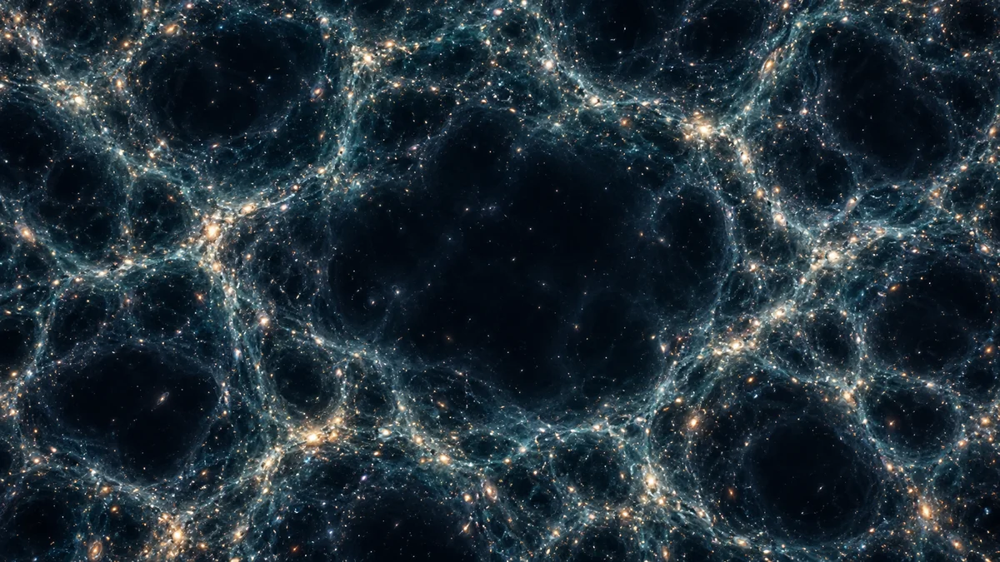

우주에도 텅 빈 동네가 있을까? 보이드 이야기
은하가 빽빽한 곳이 있다면, 아주 드문 곳도 있어요. 거대한 우주 그물 사이의 빈자리 ‘보이드’가 무엇인지, 그 빈자리에서 과학자들이 무엇을 읽는지 알아봅니다.

별 대신 은하를 점으로 찍어보면
밤하늘 사진에서는 별과 은하가 여기저기 흩어져 보입니다. 그런데 은하의 위치를 아주 넓은 입체 지도에 표시하면 뜻밖의 무늬가 나타나요. 은하들이 실처럼 이어지고, 여러 줄이 만나는 곳에는 큰 무리가 모입니다. 이 거대한 연결망을 ‘우주 거미줄’, 또는 코스믹 웹이라고 불러요. 은하 하나하나를 도시라고 상상하면, 도시가 밀집한 길과 그 사이의 한적한 공간을 함께 그려보는 셈입니다.[1] [2]
그물 사이의 드넓은 빈자리
우주 거미줄 사이에서 은하가 유난히 드문 넓은 영역이 바로 보이드입니다. 이름은 ‘빈 공간’을 떠올리게 하지만, 은하가 하나도 없다는 뜻은 아니에요. 드문드문 은하가 존재하는 보이드도 있습니다. 어딘가에 뚫린 통로나 모든 것을 빨아들이는 구멍을 가리키는 말도 아닙니다. 핵심은 주변과 비교했을 때 물질과 은하가 훨씬 적다는 점이에요. 지도에서 밝은 점보다 점 사이의 간격을 살펴보면 이해하기 쉽습니다.[3]
얼마나 크기에 ‘우주의 빈자리’일까?
보이드는 수천만 광년에서 수억 광년에 이르는 규모로 연구됩니다. 빛의 여행 시간으로 생각해도 아득한 거리이지요. 다만 모든 보이드가 같은 크기의 둥근 공은 아닙니다. 연구에서는 많은 보이드를 모아 평균적인 모양을 비교하기도 합니다. 비눗방울 사이에 은하가 놓인 모습을 떠올리면 도움이 되지만, 실제 우주에 매끈한 비눗막이 있다는 뜻은 아니에요. 비유와 실제 구조를 구분해서 상상해보세요.[2] [3]
누가 우주를 비워 놓았을까?
누군가 은하를 지워서 빈자리를 만든 것은 아닙니다. 우주의 물질이 중력으로 모여 더 큰 구조를 이루는 동안, 은하가 모인 곳과 그 사이의 성긴 곳이 함께 드러난 거예요. 연결망에는 눈에 보이는 은하뿐 아니라 가스와 직접 보이지 않는 암흑물질도 관계합니다. 화려한 우주 거미줄 영상의 색과 선은 이런 구조를 이해하도록 표현한 경우가 있으니, 맨눈으로 보이는 풍경과 똑같다고 생각하지는 마세요.[1] [2]
캠핑장에서 검은 하늘을 보면 찾을 수 있을까?
하늘의 어두운 부분을 가리키며 ‘저기가 보이드다’라고 판단하기는 어렵습니다. 은하가 하늘의 어느 방향에 있는지만으로는 입체적인 빈자리를 알 수 없기 때문이에요. 천문학자들은 은하의 위치와 빛의 적색편이 같은 자료를 함께 사용해 거리와 분포를 추정합니다. 여기에는 우주의 구성에 대한 모형도 쓰입니다. 보이드 찾기는 망원경으로 검은 얼룩 하나를 보는 일보다, 아주 큰 은하 지도를 완성하는 작업에 가깝습니다.[3]
적게 들어 있는 곳이 더 많이 알려줄 때
과학자들은 보이드의 크기와 모양, 은하의 분포를 통해 우주가 어떻게 팽창해 왔는지 살펴봅니다. 물질이 상대적으로 적은 환경은 암흑에너지의 영향을 연구하는 데도 도움이 될 수 있어요. 그렇다고 보이드 하나를 발견하면 암흑에너지의 정체가 바로 밝혀지는 것은 아닙니다. 여러 관측과 모형을 비교해 설명의 범위를 좁혀가는 과정이지요. 우주 지도에서는 빛나는 곳만큼이나, 그 사이의 빈자리도 중요한 단서입니다.[2] [3]
이 이야기를 확인한 자료
- NASA — Large Scale Structures ↗자료 확인 2026.09.12 · 원문 새 탭
- ESA — Top five mysteries Euclid will help solve ↗자료 확인 2026.09.12 · 원문 새 탭
- NASA — Roman Telescope and Cosmic Voids ↗자료 확인 2026.09.12 · 원문 새 탭
자료의 날짜와 적용 범위를 함께 확인해주세요. 오류 제보하기 →